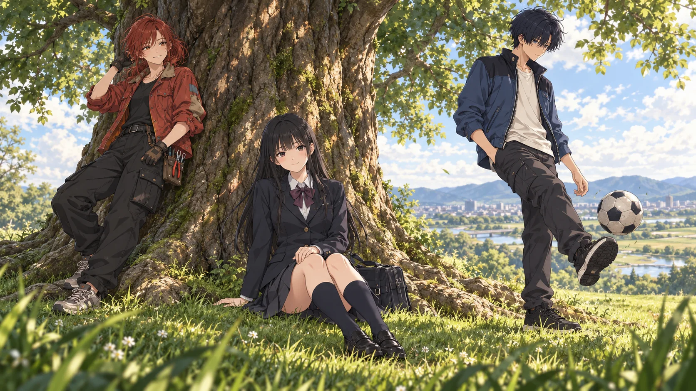

School Uniform
チャコールのブレザーとスカート、白シャツ、くすんだワイン色のリボン。黒髪が顔の繊細さを縁取る。
AGE 14–17
三人の時間を、同じ画面に。衣装、年齢、身体設定、光と空気までを統一したアニメーション制作基準。
人物は繊細なセルルック、背景は生活の痕跡が残る写実的な美術。光源・重力・接触・素材の反応を物理的に扱いながら、誇張は表情と動きにだけ許す。本ページを、三人の外見と衣装に関する基準資料とする。
チャコールのブレザーとスカート、白シャツ、くすんだワイン色のリボン。黒髪が顔の繊細さを縁取る。
AGE 14–17チャコールの大きめパーカと柔らかな室内着。警戒が解けた幼い表情と、肩に落ちる黒髪を見せる。
PRIVATEオリーブの作業服。25歳時のみ左腕が機械化、右腕は生身。傷と交換部品は実用の履歴として描く。
AGE 25 / LEFT ARM沙羅と同系統の制服。髪色と無造作な結び方、わずかに開いた姿勢で快活さを出す。
SCHOOL DAYSレンガ色のスウェットを中心にした気取らない室内着。沙羅の部屋ではベッドを自分の場所のように使う。
PRIVATE赤いワークジャケット、黒いカーゴ、工具袋。外見は人間のまま。機械性は露出させず所作の精度で匂わせる。
MECHANIC紺と白のユニフォーム、背番号10。軽さと方向転換の速さが読めるシルエット。
NUMBER 10端正だが着崩しすぎない学生服。人間社会へ自然に溶け込む外見を優先。
SCHOOL DAYS青い短丈ジャケット、生成りのシャツ、黒いブーツ。無意識に機動性を選ぶ私服。
OFF FIELD私服の青を残した耐久装備。外見年齢はほぼ変化しない。損傷は汚れと縫い直しで蓄積する。
TYPE-1000同じデザインを、時間・動作・光の中で検証する。場面画は16:9の完成フレームとして、アニメーションの質感基準を兼ねる。
校庭の門脇。制服の沙羅が、ユニフォーム姿のカイルへボールを渡す。
校庭の見えない自室。キラは、沙羅の視線の行き先をとっくに知っている。
救うか、止めるか。三人の視線が、同じ地図の上でぶつかる。
21歳の沙羅は両腕が生身。キラと二人、制御されたカイルの力を受け流す。
腕の中で失われた命。カイルの叫びは、この直後ユタニへ向かう怒りに変わる。
異なる時間の衣装を一枚に重ねた象徴画。三人が共にいられたかもしれない午後。
カットごとの解釈差を防ぐため、下記を優先する。設定画と場面画に差がある場合は、年齢別ルールを適用する。
幼少期以降、黒髪のストレートで統一。金髪・ボブの旧案は使用しない。
21歳のカイル捕獲戦では両腕が生身。25歳の再会以降は左腕のみ機械、右腕は生身。
キラとカイルは人間擬態型。通常時に関節線や露出機構を加えない。機械性は反応速度、精度、制御光で示す。
沙羅とカイルを明示的な恋人として描かない。言葉にしきれない好意と、互いを一人の存在として選ぶ行動で示す。
光源、接地、重さ、素材を説明できる画面にする。人物だけを照らす無根拠な補助光、装飾的なフレアや粒子は避ける。
17歳以降の沙羅は、首元に神経接続型の人工喉頭を付けている。ハイネックの襟元から小さく覗く程度にし、発声時だけ淡く光らせると、声の物語を画面で追える。最後のR15で光が消える演出にもつながる。
| 時期 | 沙羅 | キラ | カイル |
|---|---|---|---|
| 学生時代 | 制服 / 部屋着・黒髪 | 制服 / 部屋着 | 制服 / #10 / 私服 |
| 17歳・声を得た後 | 制服 / 部屋着・首元に人工喉頭 | 制服 / 部屋着 | 制服 / #10 / 私服 |
| 崩壊後・21歳 | 作業服・両腕生身 | 赤い作業服 | 青い未来服・制御下 |
| 再会後・25歳 | 左腕機械 / 右腕生身 | 赤い作業服 | 青い未来服 |
このページはデザイン案とコンセプトアートです。本編にない場面も含みます。物語本文（2026-09-29版）と並べたときの対応と、本編に入れる場合の検討ポイントをメモしています。
三面図の正面・側面・背面すべてで、左腕のみ機械、右腕は生身になっている。最期に頬へ触れる「生身の右手」とも合う。
場面04で沙羅の両腕は生身。キラとの二人がかりでカイルを止める構図も、本文R07と一致。
キラとカイルの未来服シートに、首の保守端子の拡大図がある。人間擬態型で機構を露出させないルールとも両立している。
非常灯の赤い搬出口、撃たれた沙羅を抱えて叫ぶカイル。本文R15の場所と状況に一致する。
本編では17歳以降の沙羅の首元に人工喉頭がある。今回のシートには描かれていないので、本番用にするときの見せ方を決めたい（作画固定事項06に提案を追加）。
25歳の沙羅（左腕が機械）と三人が拠点で地図を囲む、本編にはない場面。追加する場合は、R13の再会からR14の脱出までの間に拠点へ戻る流れを挟む形になる。21歳の場面（R08〜R09）として使うなら、沙羅の両腕は生身。
本文のR02「バレバレ」は放課後の教室。自室の場面として新たに足すことも、R03の「告白練習」（17歳・声を得た後）の絵として使うこともできる。声を出している描写なら17歳以降なので、首元に人工喉頭が入る。
本文R07では「襟元の保守端子」、デザイン案ではうなじ。デザイン案を採用する場合は、本文と絵コンテ指示の表記をそろえる。
SB-01〜15と場面画R01〜R14は、金髪ボブの沙羅など旧デザインで描かれている。デザイン案を採用する場合は、構図の確認用として扱う。
R03（17歳の誕生日に声を得る）も制服の時期なので、年齢表記を「14–15」から「14–17」に広げ、時期別の表に「17歳・声を得た後」の行を加えた。